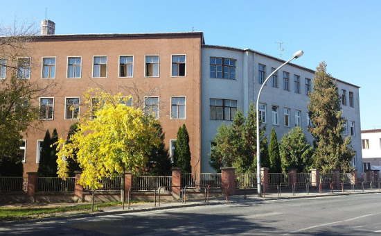

Főoldal
Ez a weboldal az én 5 éves tanulmányaimat dokumentálja. Minden év tartalmazza a tanult tantárgyakat, magyarázatokat, és képeket a munkáimból. A Vas Vármegyei SzC Gépipari és Informatikai Technikumban.

Ez a weboldal az én 5 éves tanulmányaimat dokumentálja. Minden év tartalmazza a tanult tantárgyakat, magyarázatokat, és képeket a munkáimból. A Vas Vármegyei SzC Gépipari és Informatikai Technikumban.
